| Launching AMF and Escape models is easy. When an AMF file is selected -- in any of the perspectives -- the toolbar and Application menus are updated to reflect the file you've selected and provide convenient access to other functions. For example, when we click on a metaabm file in the package explorer, model execution buttons appear in the toolbar. If you right-click on a file a pop-up menu appears like the one to the far right -- in this case we're selecting the "Execute Headless" option. To launch a model, just select one of the options. (Note that the execution framework doesn't know whether your code exists in an Escape project or another target project. If you attempt to execute a .metaabm model in an Ascape project for example, you will get an error.) |
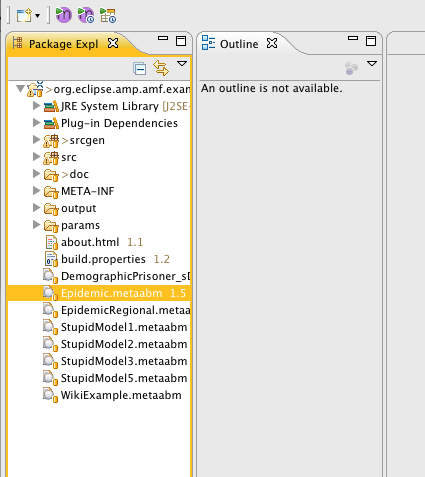 |
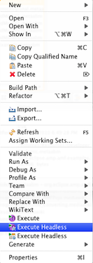 |
One a model has been launched, the Agent Execution Perspective automatically becomes active. The Provides a custom layout menus and tools specific to executing agent models.

The execution options are:
You can execute any Escape model directly from its Java file by right-clicking on it. This is used for models that have been written directly in Java, or that you have created or that have been automatically generated, such as the 3D versions of AMF models. In order for the model to launch correctly, it must have as a superclass the Escape "Scape" class. In the following screenshot, we've launched a 3D version of the Epidemic model. The 3D models are automatically generated for all .metaabm models.
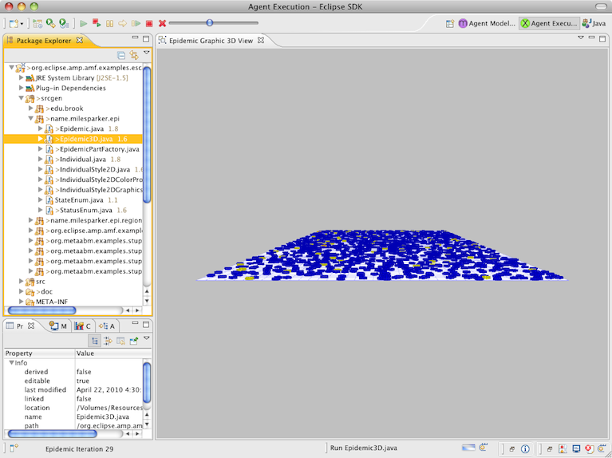
Once a model has been launched, the toolbar buttons allow you to control model execution.
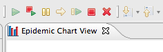
From right to left, you can start, restart, pause, step, stop and close a model. You can even run multiple models and control them independently. You can also move views around, close them and so on as with any other Eclipse views. Here we're running two separate models for comparison.

An important concept in the execution workbench is the "active model". The active model is the model that is controlled by the toolbar buttons. As discussed, the Escape environment supports more than one running model at any given time. The active model is the current "focused" or front-most model, there can be only one active model at any given time and whenever any models are running one of them will be active. To make a model become the active model, you simply select a view of that model or select the model in the model manager (see below). When a model is closed, another model is automatically activated.
There are many views specific to the Agent Execution environment that will enable you to explore and control running models.
If you want to find out more about an agent, show the properties view, and click on agent in the 2D view or any other views that support agent selection such as the tree view.
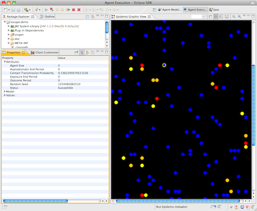
You can experiment with different parameters (settings) for models by then clicking on the model in the Model Manager or by selecting a general mode area such as the gray area enclosing the 2D view.
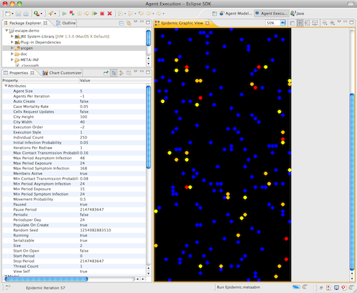
The Agent Navigator allows you to select agents from a tree view. The agent selection is coordinated across views so that for example when you select an agent in the navigator it is also selected in the 2D view. In the following screenshot you can see an agent selected in both views as well as the properties editor.

The 'Model Manager' allows you to examine and control the status of all running models. In the following screenshot, we've launched four separate models so that we can compare the typical model state at different periods.
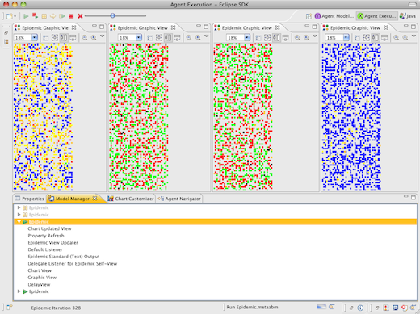
The manager shows that two of the models are running and two are paused. By opening the model node, we can see the views that are currently being displayed. Note that we mean something different by "Views" in this context. Here "Views" are any thing that is monitoring the state of a running model. A view may not have a graphical component at all.
You can make any model the current active model by clicking on its node in this view.
The 'About this Model' view displays information about a (AMF or Java based) model if it has been provided by the developer. In order to appear in this dialog, create a file named "About[MyModel].html" where "MyModel" is the model's Scape Class Name (not the AMF model file name). The file should be placed in a "res" source folder in the model project directory in a parallel directory path to the root scape's Java class package. For example, an about file for a model defined by the scape "edu.brook.norms.Norms" should be placed at "res/edu/brook/norms/AboutNorms.html". The file should be an html fragment -- that is, without body and head tags -- and can include any valid html tags, including links.

The Agent Modeling Environment is designed to support many kinds of 2D or 3D visualization. AMP includes the following views for generated models. The Escape API supports a number of additional visualization to support Ascape models that aren't shown here. Look at the example org.ascape.escape.models.examples and org.ascape.escape.models.brook for examples of those.
The Graphic 2D view is the most common view way to work with an Agent Model and is automatically generated and displayed for executing models.

There are a number of view widgets in the upper-right hand corner that you can use to modify the view. You can:
A Chart view is automatically created and displayed for executing models. It can display aggregate values for any of the agent attributes you have set the "gather data" value to true for. Charts can be easily modified. While the built-in view is not meant to be the sole tool for Escape model data analysis, it provides an easy to use and powerful way to explore models interactively. The Chart view widgets allow you to modify the chart with the click of a button.
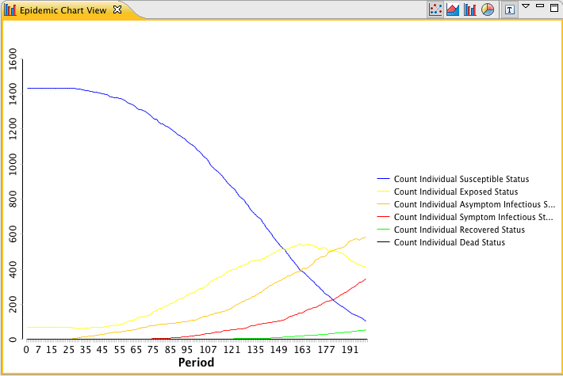
Several chart types are supported: The line, area, bar and pie chart. Click on one of the icons to select that type.
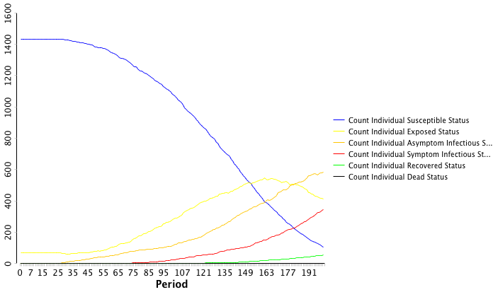
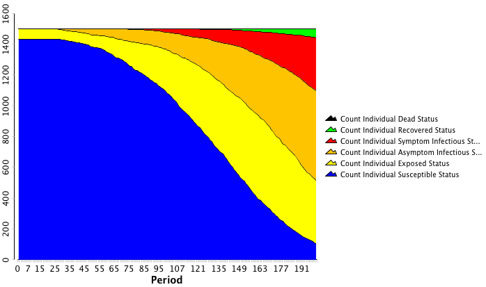
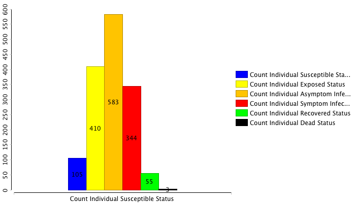
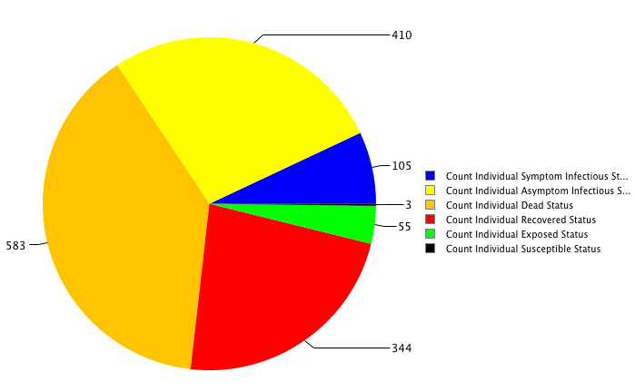
To select the statistics to display, show the Chart Customizer view. When the customizer has been selected, select a chart to customize. The customizer presents the possible choices in a 2D format. On one axis are the attributes that have data being collected, and on the other are the measurements collected on those axes, i.e. Count, Minimum, Maximum, Variance, Standard Deviation, Sum and Average. To clear all selections, click the Gray "X" button.
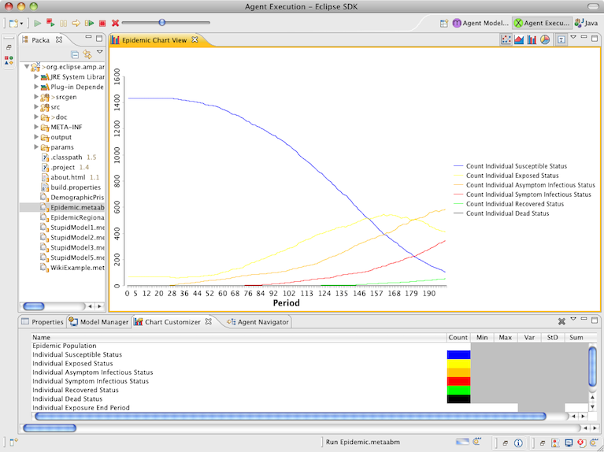
There are a number of other things to play around with, such as zooming the agent view or selecting other chart series to display using the Chart Customizer, so just explore. You can always close an active model by clicking on the close toolbar button. Or if you can't access the models controls for some reason, you can open the progress view and close projects form there.